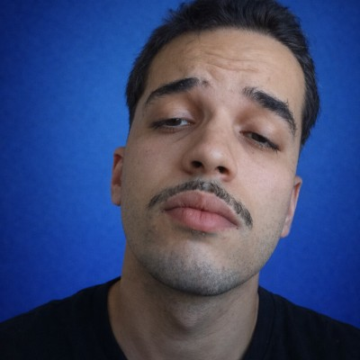

Planning Intelligence ↗
Uma pipeline rastreável transforma planilhas de planejamento em dados estruturados para análise.
AMOSTRA PÚBLICA SANITIZADA · DADOS FICTÍCIOSPYTHON · ETL · DATAPORTFÓLIO PESSOAL · DADOS / AUTOMAÇÃO
Eu conecto operação, dados e automação.
Sou Nilson. Minha trajetória passou pelo design, por redes e por operações antes de chegar a dados e BI. Essa experiência me ajuda a entender o problema de quem usa a informação e a construir análises, pipelines e automações que tornam o trabalho mais confiável.
RPA · ANÁLISE DE DADOS · AUTOMAÇÃO · BI

03 PROJETOS SELECIONADOS
Uma pipeline rastreável transforma planilhas de planejamento em dados estruturados para análise.
AMOSTRA PÚBLICA SANITIZADA · DADOS FICTÍCIOSPYTHON · ETL · DATAUm ambiente local para coordenar agentes de IA no fluxo de desenvolvimento.
AI · DEVELOPER TOOLSUma skill de design e motion fundamentada em medições de sites reais.
PLAYWRIGHT · DESIGN · MOTION